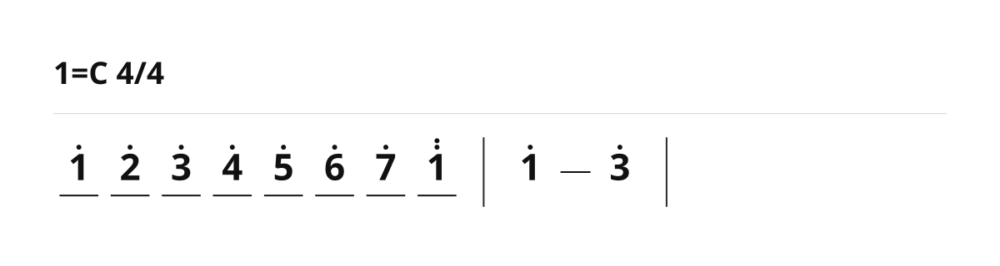

把五线谱变成简谱
离谱是一个开源桌面工具：导入五线谱图片或多页 PDF，输出可直接阅读的简谱文本， 以及带高音点、减时线、小节线的印刷级简谱图（PNG / SVG），需要时还能导出 MusicXML 继续编辑。
Windows 10/11 · 单文件 exe，免安装 · 也可用源码运行（Python 3.9+）

上面这张图就是程序真实渲染的输出，不是设计稿。
先说清楚能力边界
两种识别模式差别很大，选错了会失望，所以放在最前面。
| 能力 | Audiveris 模式 | OpenCV 音高草图模式 |
|---|---|---|
| 安装要求 | 需另外安装 Audiveris | 开箱即用 |
| 音高 | 准确识谱 | 按纵向位置估算 |
| 调号 / 升降号 | 支持 | 不支持 |
| 节奏时值 / 小节线 | 支持 | 不支持 |
| 和弦 | 保留（导出 MusicXML 完整） | 不支持 |
| MusicXML 导出 | 支持 | 不支持 |
功能
多页 PDF 直接进
选一个 PDF 就按页拆开、按页码排序识别，不用先手动导图。
印刷级渲染
PNG 与 SVG 双输出，自动换行分页，高音点、减时线、增时线、小节线都按规范绘制。
可继续编辑
一键导出 MusicXML，拖进 MuseScore / Sibelius 就能改谱、加伴奏。
小工具
整体移调、自动修复异常时值、生成 MIDI 试听、最近 100 条历史记录。
不写死系统路径
字体、数据目录、图标都按平台适配，Windows / macOS / Linux 都能跑源码版。
开源可核查
MIT 协议，代码按 core / render / ui 分层，有 pytest 与 GitHub Actions。
下载与运行
推荐用打包版，不想装 Audiveris 也能先体验音高草图模式。
exe 作为 Release 附件发布，不打进仓库，避免仓库体积过大。
源码运行：
git clone https://github.com/66SHUN66/staff-to-jianpu.git cd staff-to-jianpu python -m venv .venv && .venv\Scripts\activate # macOS/Linux: source .venv/bin/activate pip install -r requirements.txt python main.py
常见问题
为什么识别结果只有音高，没有节奏？
说明当前跑的是 OpenCV 草图模式。装上 Audiveris 后重启程序，标题栏会显示「Audiveris 高精度识别」，那时才有调号、节奏与小节线。
为什么没有网页版在线识别？
识谱依赖 Java 版 Audiveris，浏览器里跑不动；做假进度条骗人没意义，所以这个页面只做介绍，识别请在桌面端进行。
字体显示成方块怎么办？
程序会依次尝试随包字库、系统中文字体、matplotlib 字体索引。也可以设置环境变量 LILIPU_FONT 指向一个 ttf/otf 文件。
识别准不准？
取决于原图质量：正拍、清晰、无透视畸变的扫描件效果最好；手机斜拍的照片建议先裁正。Audiveris 单页一般 10–20 秒。
日志和历史记录存在哪？
Windows 在 %APPDATA%\Lilipu\，macOS 在 ~/Library/Application Support/Lilipu/，
Linux 在 ~/.local/share/Lilipu/。旧版 ScoreConverter 目录的历史会在首次启动时自动迁移。